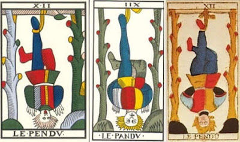

Hanged Man and Death
The Hanged Man
In Italy of the 15th and 16th centuries, this card had three main names, albeit with some variations in spelling: (1) Impiccato, meaning "Hanged Man" (2) "Appeso", normally applying mainly to inanimate objects and meaning "Hung"; and (3) "Traditore", meaning "traitor". A variation is "Appicato," meaning "man set on fire"; but that is surely a confusion, combining the first sylalble of "appeso" with the other syllables of "impicatto." Two others, in one occurrence each, are "prudentia." or possibly "prudentia e ", Imperiali in Ferrara or Venice, and "crux", Alciato 1444.
How "traditore" connects with the first two is easy to explain. In medieval Italy the pose of hanging upside down from one leg was commonly understood to imply the act of treason. Andrea Vitali in his essay "A Gang of Traitors" gives numerous examples. Most are from the 16th and 17th century, but there are a few from the 14th and 15th centuries.
The oldest surviving image of a man hanging from one foot dates to 1410, in the Basilica of San Petronio, Bologna, to represent those guilty of idolatry and sent to hell. As explained by Andrea Vitali in his essay "The Hanged Man" (http://www.letarot.it/page.aspx?id=124&lng=ITA), idolatry was thought to be the ultimate treason, because idolaters took all the benefits of creation without acknowledging the one Creator.
The oldest known Hanged Man card is in the Visconti-Sforza deck of the early to mid 1450s (near right). However the other (far right), in the so-called "Charles VI" tarot, probably of Florence, is not much later. Between the two, they represent the main ways the subject was depicted in Italy of the 15th and 16th century.
Gertrude Moakley saw a direct relationship of the Sforza card to the history of the Sforza family: the Antipope John XXIII put up posters on all the bridges of Rome with this image, along with the name, "Muzio Attendolo" the word "traditore," and the accusation that Muzio committed 12 treasons against John. Muzio Attendola, nickhamed "Sforza" for his ability to get his men out of tight spots, was the father of Francesco Sforza, the probable commissioner of the deck (Moakley, The Tarot Cards Painted by Bonifacio Bembo, 1966, p. 95).
The full list of accusations is as follows (Italian from Andrea Vitali's "L'Appeso", which in turn cites Ludovico Antonio Muratori, Annali d’Italia, Milan, Giambattista Pasquali, 1744, Anno 1412, p. 62; the English is based on Moakley):
Per ordine del Signor nostro Papa fu dipinto su tutti i ponti e su tutte le porte di Roma, sospeso pel piede destro alla forca, quale traditore della Santa Madre Chiesa, Sforza Attendolo e teneva una zappa nella mano destra, e nella mano sinistra una scritta che diceva così: Io sono Sforza vilano de la Cotignola, traditore, che XII tradimenti ho facti alla Chiesa contro lo mio honore, promissioni, capitoli, pacti aio roctiProbably not coincidentally, the card was always, in the 15th-16th century lists and numbered decks, the card just before Death, and so usually 12th in the sequence. Why 12? It could be an association with the card, but more likely it is an association with Judas, who was known as the 12th disciple. Some early cards, starting with the " Charles VI" (above right) show the Hanged Man weighed down by money bags, of which we can just see the gold color of the coins inside. To be sure, Judas's coins were "pieces of silver", and he is said in only one gospel to have hanged himself, and then right side up; but it is his status as a traitor to the Lord that makes him a prime example of the card's title.
(By order of our Lord Pope is to be depicted on all the bridges and on all the gates of Rome, suspended by the right foot from a gallows, as a traitor to the Holy Mother Church, Sforza Attendolo, holding a hoe in his right hand and in his left hand a sign saying: I am Sforza peasant of Cotignola, traitor, who twelve times have betrayed the Church against my honor: promises, compacts, agreements have I broken [aio rocti = ho io rotti]).
It was also a punishment for other crimes. In Northern Europe it was a punishment for theft. In Germany and the Netherlands it was given specifically to Jews, to distinguish them from Christians, who apparently were hung right side up. At right is a 1515 woodcut in anti-Jewish poem by Thomas Murner of this punishment; below the victim a fire burns, and dogs are hung next to him, partly to suggest a comparison and partly to inflict more punishment from the dogs' bites (above left, M. J. Hurst at http://www.tarotforum.net/showthread.php?t=93371). At least one tarot card had a hanged man tied in the same way, that of Catelin Geoffrey in 1557 (above right, http://www.tarotforum.net/showthread.php?t=93371).
In the horoscope drawn by Erhard Schoen, the astrological houses of which have many obvious correspondences to the images of the tarot, the Hanged Man would correspond to House 12, the House of Confinement, portraying a man in the stocks (image from E. and J. Lehner, Astrology and Astronomy). That was a punishment of the time given for minor offenses, usually in public places so as to humiliate the person being subjected to it. The person's footwear was taken off, and he might be tickled or whipped on the soles of the feet, as well as exposed to all kinds of weather. (http://en.wikipedia.org/wiki/Stocks).
Also connecting to Judas is the number of notches on the poles, at least in some of its manifestations .While the Sforza has no notches, and the "Charles VI" has 5 on the left, 7 on the right (totaling 12), and 3 on the crosspiece, the Jean Noblet tarot of 1660s Paris (at far left below, as restored by Flornoy) makes the allegory clear: 5 on the left, 6 on the right, and 1 on the crosspiece, directly above the Hanged Man, making him the twelfth.
Another connection to Judas, made by a few tarot historians on the Web, is Giotto's 1305 Disparazione, a representation of the vice of Desperation or Despair. It shows a woman hanged right side up, like Judas. It is one of several Giotto images reminiscent of tarot trumps (see my sections on the Fool, Popess, Pope, Strength, Tower, and Star cards).
Another image of virtue turned upside-down is in Plato's Timaeus, a work cited often throughout the Middle Ages and Renaissance. He says at 90a (http://www.perseus.tufts.edu/hopper/text?doc=Perseus%3Atext%3A1999.01.0180%3Atext%3DTim.%3Asection%3D90a):
..we declare that God has given to each of us, as his daemon, that kind of soul which is housed in the top of our body and which raises us—seeing that we are not an earthly but a heavenly plant up from earth towards our kindred in the heaven. And herein we speak most truly; for it is by suspending our head and root from that region whence the substance of our soul first came that the Divine Power keeps upright our whole body.
Man is
naturally upright, so that he may contact with his head the high realms
of Heaven. The man who is enslaved to his animal nature is then like a
man with his head downward, toward matter. In fact medieval manuscripts portrayed people upside down precisely with this symbolism in mind.
Of such figures as depicted on the
columns of medieval cathedrals, Gérard de Champeaux and Dom Sébastien Sterckx
write
.jpg) Ayant perdu la station
droite, il [l’homme culbuté] a perdu tout ce qu'elle symbolise et sous-tend
d'effort vers le haut, vers le ciel, vers le spirituel. Il ne gravit plus l'ace
du monde vers le pôle céleste et vers Dieu; il s'enfornce au contraire dans le
sous-monde animal et les ténébreuses régions inférieures.
Ayant perdu la station
droite, il [l’homme culbuté] a perdu tout ce qu'elle symbolise et sous-tend
d'effort vers le haut, vers le ciel, vers le spirituel. Il ne gravit plus l'ace
du monde vers le pôle céleste et vers Dieu; il s'enfornce au contraire dans le
sous-monde animal et les ténébreuses régions inférieures.
(Having having lost his upright position, he [the upside down man] has lost all that it symbolizes and that underlies his effort upwards, towards heaven, towards the spiritual. He no longer climbs the axis of the world towards the celestial pole and towards God; on the contrary, he plunges into the animal underworld and the dark lower regions.) (Introduction au monde des symboles, 2nd ed., Saint-Léger-Vauban, Yonne: Zodiaque 1972, p. 361. Thanks to Andrea Vitali for this quotation. The translation is mine.)

In the 18th century, the number of notches changes: there are 6 on one side, 6 on the other, so that the one on the crosspiece (now turned into a knot) makes 13 (center, Dodal as restored by Flornoy, 1704 Lyon; and right, Conver 1761, Marseille as published by Heron from originals at the Bibliothèque Nationale of France).
Why would the number of notches change to 12? It might be just an illustration of the card's number, or of its subject as Judas. But it could also be how a negative card is turned into a positive one. After Judas hanged himself, he was replaced, and the replacement would have been the new 12th disciple, not 13th. The 13th might have been Jesus. On the other hand, in the Grail stories, both Jesus and Judas were considered 13th.
If this sounds like a monstrous defamation of Jesus from a Christian perspective, consider the story from the point of view of the Sanhedrin, the Jewish religious authorities of the gospels. They considered Jesus the traitor rather than Judas--a traitor to the Jewish religion of his birth. Christians, of course, would have considered this charge unfounded, but the result all the same is a different interpretation of the card: not as a traitor, but as someone accused, sentenced, and executed unjustly for being a traitor. The blood-red tips of all the lopped branches then suggest Christ's martyrdom and that which lay ahead of all the apostles.
Perhaps not coincidentally, the same kind of interpretation could apply to the Sforza card as Muzio Attendola, from the point of view of the Sforza family--not that he was Christ, but that he was accused unjustly of being a traitor If he deserted John, it was probably at the end of his contract, which he was under no obligation to renew, however much John demanded it. Also, Muzio's action, by weakening the antipope John, helped to end the schism then plaguing the Church. So he was in a sense a savior of the true Church.
Unlike Judas, Jesus was of course not enslaved by his animal nature. But he did go to the underworld after his death, to free the faithful of before his time. Both the Sforza card and the French cards show a whole beneath the man's head. In the Sforza card, it resembles the kind of holes that people dig when they are planting seeds. Moreover, the PMB Hanged Man's leggings are green, a sign of physical generativity (in that deck, where the Empress and female Lover's glove are also green as well as those of all the court cards in Batons) as well as that of the spirit; moreover, his hair is blond, an image of the sun. In contrast, the Charles VI Judas figure has red hair--for the Devil, presumably.
An allusion to Jesus would also give a double meaning to the cross or X that his legs form on the Milan and Franch cards. On the Bologna fresco, that the legs of the idolators form a cross might mean the true God they denied. On a savior-figure such as Muzio, the allusion would be to Jesus instead. The cross is not only repeated faithfully over time, but is even Alciato's 1544 word for the card. The intent seems clear enough.
Another point: both the crossed legs and the colors of the leggings seem to parallel the Hanged Man with the Emperor: compare the above Hanged Men with the Emperors of the same decks. At right are Noblet, Dodal, and Conver. The design suggests that perhaps the Hanged Man is merely the young-man version of the Emperor as King of Kings. (In the middle I have put the alchemical sign for sulphur. Upside down, the cross would be above the triangle. The occultists found significance in this parallel, which I will discuss in relation to them.)
One final detail that is worth noting about this style of Hanged Man card: that is the odd feather-like fingers that hang down from behind the
Court de Gébelin, Etteilla, Imperiali, Piscina
Court de Gébelin, writing in 1781 Paris, said of this card (http://www.tarock.info/gebelin.htm and J. Karlin, Rhapsodies of the Bizarre, p. 23, except for the last line, better rendered by Tyson at http://priory-of-sion.com/biblios/links/gebelin.pdf):
No. XII. La Prudence est du nombre des quatre Vertus Cardinales: les Egyptiens purent-ils l'oublier dans cette peinture de la Vie Humaine ? Cependant, on ne la trouve pas dans ce Jeu. On voit à sa place sous le No. XII. entre la Force & la Tempérance, un homme pendu par les pieds: mais que fait-là ce pendu ? c'est l'ouvrage d'un malheureux Cartier présomptueux qui ne comprenant pas la beauté de l'allégorie renfermée sous ce tableau, a pris sur lui de la corriger, & par-là même de le défigurer entierement.The practice of turning the card upside down so that the man is standing on one foot did not start with de Gébelin, however (his book illustration is the near right). It is also present in the Flemish cards of Vandenborre, mid 18th century (far right), which in turn looks inspired by Viéville of 1660 Paris (center), as can be seen by the number on top, which is where Viéville placed his numbers (http://www.tarot-history.com/Jacques-Vieville/pages/page-2.html).
La Prudence ne pouvoit être représentée d'une maniere sensible aux yeux que par un homme debout, qui ayant un pied posé, avance l'autre, & le tient suspendu examinant le lieu où il pourra le placer surement. Le titre de cette carte étoit donc l'homme au pied suspendu, pede suspenso: le Cartier ne sachant ce que cela vouloit dire, en a fait un homme pendu par les pieds.
Puis on a demandé, pourquoi un pendu dans ce Jeu? & on n'a pas manqué de dire, c'est la juste punition de l'Inventeur du Jeu, pour y avoir représenté une Papesse.
Mais placé entre la Force, la Tempérance & la Justice, qui ne voit que c'est la Prudence qu'on voulut & qu'on dut représenter primitivement?
(Number XII. Prudence is among the four cardinal virtues: could the Egyptians omit her in this portrait of Human Life? But then again, one does not find her in this game. One sees in her place, under number XII between Strength and Temperance, a man hanged by his feet: but who hanged this man?--it is the work of a rotten and arrogant cardmaker who, not understanding the beauty of the allegory contained in this tableau, has taken upon himself to correct it, & thereby even to disfigure it.
Prudence can be visually represented in a perceptible manner only by an upright man, who having one foot set, is advancing the other, and holding it suspended, examining the place where he can assuredly plant it. The title of this card was then the Man with A Hanging Foot, pede suspenso: the Cardmaker not knowing what this meant, made of it a man hanged by the feet.
Then someone asked, why a hanged man in this Game? and one has not failed to say, it is the just punishment for the Inventor of the Game, for having represented there a Popess. But placed between Strength, Temperance and Justice, who does not see that it is Prudence that was lacking and that must have been portrayed originally?
Nor did an association between prudence and the card start with Gébelin. While the card was of a traitor, it also represented the antitype of Prudence. For Vincenzo Imperiali, as Andrea Vitali points out in his essay on the Hanged Man, the relationship between the two is as though they were on the same pair of scales, balancing each other. In a poem that goes through the triumphs in order, starting with the World card, when he gets to Death, we find "prudence" in the next line:
Vien poi la Morte, et mena un’altra danza,Et la prudenza, e la malitia atterra,Et pareggia ciascuno alla bilanza.
Ma 'l vecchio saggio la Fortun' afferra...
(Then comes Death, and brings another dance,prudence, and malice down here,And everything equals out on the scales.
But the wise old man catches fortune...)
That prudence is the product of good counsel/advice was a mainstay of Aquinas's philosophy, as in Summa Theologiae q. 47 a. 1, http://www.newadvent.org/summa/3047.htm:Questo Vecchio segue l'Impiccao giunto a questo punto per hever sprezzato il buon conseglio. Il qual l'Iventor ha posto per rappresentare un huomo tristo, falso, vitioso, pestifero, e brevemente concludndo (poiche il buon conseglio depende dalle virtu) per un humo privo a afatto d'ogni virtue che senza consiglio come disperrato s'e implicao, per dimonstrar avisar il pessimo fine che fanno i speratori de i prudenti consegli, e per consequenze della virtu, la qual forte di gente per essere meritevolmente da ogniuno odiata morendo perde dal tuto la soa fama, e nome come se giami non fosse nata.
(The Old Man is followed by the Hanged Man, who came to this poem because he despised all good advice. The inventor has placed him to represent a dishonest, false, vicious, pestiferous man: in order to conclude briefly (since good advice depends on virtue) a man completely devoid of any virtue, who hanged himself being as a desperate man without counsel. This shows the terrible end of those that despise prudent advice and, as a consequence, virtues: such people are rightly hated by everyone, and when they die they lose all their fame, and name, as if they were never born
...the Philosopher [Aristotle] states (Ethic. vi, 5,7,9) that a prudent man "takes good counsel."So what Piscina is doing is juxtaposing the Hanged Man with prudence, in the sense of good counsel and the courses of action that follow from good counsel: the Hanged Man despises prudence. It is similar to Imperiali, who wrote around the same time but in a different part of Italy (Ferrara as opposed to Piedmont).
Etteilla, writing only a couple of years after Gebelin, also identified the card with Prudence and showed it the right-way up. To make things absolutely clear, he turned the rope into a snake (see near right below). He explains how in fact he is only restoring the original version (2nd Cahier, 1785, pp. 21-22, my translation):
The Cardmakers, seeing only one of the feet of Prudence posed on the ground, figured that it was a man hung by one foot, and what is worse, they discovered the vestiges of a serpent, which they took for a cord: from this false judgment, they established a beam across; and turning him upside down, they painted [p. 22] his hair in an equally horrifying position.
They saw, says M. De Gebelin, three Virtues; there had to be a fourth, and he demonstrates solidly, in the article on the Tarots inserted in his eighth volume of Primitive World, that Prudence was represented upright, posed on one foot, and the other in the intention of making a step; this is, we say simply, a man who having raised one foot in order to walk, considers prudently where he is going to place it, which supposes a great prudence, if this man is surrounded by dangerous reptiles, above all if they offend.
As stated above (II-II:45:1 and II-II:45:3), wisdom considers the absolutely highest cause: so that the consideration of the highest cause in any particular genus belongs to wisdom in that genus. Now in the genus of human acts the highest cause is the common end of all human life, and it is this end that prudence intends ...Wherefore it is clear that prudence is wisdom about human affairs: but not wisdom absolutely, because it is not about the absolutely highest cause, for it is about human good, and this is not the best thing of all.)
 While Plato had the four principal virtues as temperance, fortitude, wisdom, and justice, Cicero substituted prudence for Plato's wisdom, as the type of wisdom relevant to moral virtue, and the medieval Church followed his example. Since prudence is held by Aquinas to be the virtue that guides all the rest, we can see why the tarot writers were concerned to find it in the cards.
While Plato had the four principal virtues as temperance, fortitude, wisdom, and justice, Cicero substituted prudence for Plato's wisdom, as the type of wisdom relevant to moral virtue, and the medieval Church followed his example. Since prudence is held by Aquinas to be the virtue that guides all the rest, we can see why the tarot writers were concerned to find it in the cards.Despite changing the Traditore into Prudence, Etteilla did not do away with the Traitor card. He simply redefined the Hermit, now a sinister-looking monk with the keyword Traitre both upright and reversed; with his unlit lantern (ignorance, and in some non-canonical versions shining brightly!) in the daylight of the Enlightenment, he is no doubt working against those in favor of revolution.
The 19th and 20th century occultists
Starting in 1856 the card got a new definition, with multiple meanings. Here is Eliphas Lévi, 1856 (pp. 255-256 of 1930 edition (Chacornac frères, Paris, accessed online at http://gallica.bnf.fr/ark:/12148/bpt6k205564w/f4.item, followed by the Greer and Mikituk translation, 2017, with a few modifications to conform more precisely to Lévi's text):
La figure du Tarot qui correspond à ce chapitre a été mal comprise par Court de Gebelin et par Eteilla, .qui ont cru y voir seulement une erreur commise par un cartier allemand. Cette figure représente un homme, les mains liées derrière le dos, deux sacs d'argent attachés aux aisselles, et pendu par un pied à une potence composée de deux [256] troncs d'arbre ayant .chacun la. racine de six branches coupées et d'une traverse complétant la figure du Tau hébreu rt ; les jambes du patient sont. croisées et ses coudes forment un triangle avec sa tète. Or le triangle surmonté d'une croix signifie, .en alchimie, la fin et la perfection du grand oeuvre, signification identique avec celle de la lettre ri , qui est la dernière de l'alphabet sacré. Ce pendu c'est donc l'adepte, lié par ses engagements, spiritualisé ou les pieds tournés vers le ciel; c'est aussi l'antique Prométhée, subissant dans une torture immortelle la peine de son glorieux larcin. C'est vulgairement Judas le traître, et son supplice menace les révélateurs du grand arcane. Enfin, pour les cabalistes juifs, ce pendu, qui correspond à leur douzième dogme, celui du Messie promis, est une protestation contre le Sauveur reconnu par les chrétiens, et ils semblent lui dire encore: Comment sauverais-tu les autres, toi qui n'as pu te sauver toi-même?The image of a man with money bags attached to his armpits was for me an unclear image: are they sewn into his skin, so that they flop down onto his shoulders when he is upside down? So I am grateful to Wirth for making the description comprehensible (at right); Levi did not mention the falling coins, but it is a nice touch, to be discussed later in relation to Wirth's ideas.
(The Tarot drawing which corresponds to this chapter was poorly understood by Court of Gebelin and Eteilla, who believed that all they saw was an error made by a German card maker. This drawing represents a man, his hands tied behind his back, with two bags of money attached to the armpits, and hnging by one foot from a gallows made of two tree trunks which each have six branches six cut branches and a crossbeam that completes the Hebrew letter Tau; hia legs are crossed and his elbows form a triangle with his head. Now the triangle surmounted by a cross signifies in alchemy the end and perfection of the great work, a meaning identical with that of the letter Tau, which is the last of the sacred alphabet. This hanged man is therefore the adept, tied by his commitments, spiritualized where his feet [are] turned towards heaven; it is also the Prometheus of antiquity, suffering in immortal torture the pain of his glorious theft. It is vulgarly Judas the traitor, and his torture threatens the revealers of the great mystery. Finally, for the Jewish cabalists, this hanged man, who corresponds to their twelfth dogma, that of their promised Messiah, is a protest against the Savior recognized by the Christians, and they still seem to say to him: How would you save others, you who could not save yourself?
Lévi wanted to convey both Judas and the triangle surmounted by a cross, which he said in the passage just quoted was the alchemical symbol of "the end and perfection of the great work". That the Hanged Man could be Christ himself is not mentioned: instead we have the "promised Messiah" of the Jews, a physical man successful in warfare and politics. The tarot, after all, is Jewish in one part of its evolution.
Yet in repeating the mocking charge against Christ, Lévi is betraying his own antisemitism, which he makes explicit in the next paragraph. First he recounts what he claims is a rabbinical parable, which is says is from a commentary to the "Sepher-Toldos-Jeschu" (now known as the Sefer Tolodot Yeshu) in which a materialstic Judas, at night while Jesus and Peter are sleeping, eats a goose that the three have agreed to save until the next day. In the morning Peter says he dreamed he was the vicar of God, Jesus says he dreamed he was God, and Judas hypocritically says he dreamed he ate the goose. Of this tale Lévi says (Ibid pp. 257-258):
Cette légende est une protestation du positivisme juif contre le mysticisme chrétien. En effet, pendant que les croyants se livraient à de beaux rêves [258] l'Israélite proscrit, le Judas de la civilisation chrétienne, travaillait, vendait, agiotait, devenait riche, s'emparait des réalités de la vie présente, et se mettait en mesure de prêter des moyens d'existence aux cultes mêmes qui l'avaient si longtemps proscrit. Les anciens adorateurs de l'arche, restés fidèles au culte du coffre-fort, ont maintenant la Bourse pour temple, et c'est de là qu'ils gouvernent le monde chrétien. Judas peut, en effet, rire et se féliciter de n'avoir pas dormi comme saint Pierre.Instead of Jesus hanging by one foot, Lévi has Prometheus, his Greek equivalent, who sacrificed himself in stealing "science," i.e. the means of acquiring knowledge (in the myth, fire) and giving it to humanity. It is also the "free and sacrified" adept, although how and why he is sacrificed is not clear, unless it is by revealing this knowledge to the world, in which case he in danger of being killed for betraying the secrets. But since the true adept does not betray the secrets; what he has in mind is not clear; the secret is safe from the world, and us, unless someone can unravel the meaning of Lévi's preceding account of spiritual alchemy.
(The legend is a Jewish positivist protest against Christian mysticism. In fact, while the believers were having their nice dreams, the proscribed Israelite, the Judas of Christian civilisation, worked, sold, intrigued, intrigued, became rich, and made off with the realities of our present life, so that he became in a position to advance the means of existence to those cults which had so long been proscribed. The ancient adorers of the ark remained faithful to the cult of the strong box; the Exchange is now their temple, and it is from there that they govern the Christian world. Judas can, in effect, live and be glad not to have slept like St. Peter.)
Paul Christian in 1863 and 1870 explains the card on three levels. Assigning it to the "Egyptian" letter Luzain and the number 30, he says (History and Practice of Magic, p. 29):
L-30 expresses in the divine world the revelation of the Law; in te intellectual world the teaching of Duty; n the physical world sacrifice.This sounds like the work of Christ. However it is not about Christ himself, but those who would follow him: After a description of the orthodox TdM card (omitting the money bags), he says (Ibid, p. 30):
It is the sign of violent death encountered by tragic accident or in the expiation of of some crime, and accepted in a spirit of heroic devotion to Truth and Justice. The twelve lopped branches signify the extinction of life, the destruction of the twelve houses of the Horoscope. The inverted triangle symbolizes catastrophe.There is no danger of the card predicting any symbolic death here! At the end he advises one who should be so unlucky as to get this card not to die "without accepting with resignation the will of God and without pardoning your enemies." Again, the model is Christ on the cross.
Papus tries to explain better what Christian has said. The revelation of the Law implies punishment for one who violates it, or elevation for one who understands it (Tarot of the Bohemians, p. 152). He contrasts the Hanged Man with the Magician (Ibid. pp. 152-153):
The young man is again the Juggler whose transformation we have already followed in the 1st, 6th, and 7th arcana.In Papus's system every third card represents an equilibrium between the preceding two, which are opposites, in a spiraling series where each level repeats the former on a higher plane. So between the "Necessity" of the Wheel (10)and the "Liberty" of Strength (11), falls, on the divine plane, "Charity-Grace, or the preserving power of Love" (12); from Power (10) and Courage (11), we have "the reflex of Prudence, Acquired experience (Knowledge)" (12)), and from "Potential Manifestation" (10) and "reflected life" (11) we have "the reflex of the astral Fluid, Equilibriated Force". I suppose that the latter means forces in a state of suspension, that pulling up equaling that which pushes down. Notice how he has found de Gebelin's Prudence in this level, as a "reflex" of 9.
Like the sun placed in the midst of the signs of the Zodiac (six on each side, the lopped branches), our young hero is again suspended between two decisions, from which will spring, no longer his physical future, as in the 6th arcanum, but his spiritual future.
...
He serves as an example to the presumptuous, and his position indicates discipline, the absolute submission which the human owes to the Divine.
Wirth wrote about the card that he designed for Papus, in his 1927 Tarot des Imagiers du Moyen-Age. For him, it is the beginning of the reversal from active to passive, masculine to feminine, as he characterizes the two halves of the tarot sequence. This contrast comes out in his comparison of the Hanged Man to the Magician. The Hanged Man is like the Magician in appearance, young and blond. But there the likeness stops.
Such a contrast is also implicit in the Noblet and other TdM Emperor cards, where, as we have seen, the one is the reverse of the other and the leggings match.. There is also the matter of the alchemical symbol the figure makes. While the Emperor forms the sign of Sulphur, the Hanged Man makes that of the Great Work, Wirth says, a doctrine that goes back to Levi's "perfection of the Work". .The Magus has faith in himself, in his intelligence and in his will-power; he feels that he is sovereign and aspires to the conquest of his kingdom. The Mystic, on the other hand, is convinced that he is nothing but an empty shell, powerless in himself. His passive renunciation puts him at the service of whatever acts upon him. He hands himself over with a foot and arms bound, like the Hanged Man who in the Tarot, seems to be the same character as the Magician.

{kind=link}
The Hanged Man, unlike the Magician and the Emperor, is defined by passivity rather than activity. He is not completely passive, however, as comes out in his comparison of the Hanged Man with the Lover:
We might ask, how can he choose good over evil when he is almost totally unable to move? He is not completely bound: with one leg free he can still make a cross. But chiefly it is his soul that is free, free from all material ambitions. He also has his imagination. Here there is the matter of the two crescents on his jacket:Red and white alternate on the Hanged Man's tunic, like the red and green in the Lover's clothing (arcana 6). The activity of red seems to contradict the passive nature of the character who, however, could not be passive in every respect, for he needs to be active in order to reject harmful influences and seek good ones. As for white it is related to the purity of the soul and imagination, indispensable for the conception of just ideas and the growth of generous feelings.
the red and waning Moon on the left relates to the humility felt by the mystic, whose self-denial is active, and the white waxing Moon on the right relates to the intuitive faculties whose task is to gather in the impressions of the imagination without changing them, then to interpret them correctly.And with regard to "the growth of generous feelings," there are the coins that fall from his pouch, over which he may yet have some control, tightening or loosening them between his arms and his body:
Where the Magus claims to command, the Mystic aspires only to obey. This confident abandon is revealed by his serene, carefree appearance, hence the calm and smiling face of the Hanged Man, a strange sufferer, whose bound arms are holding a bag from which fall gold and silver coins. These are the spiritual treasures accumulated by the Initiate who has enriched himself intellectually. Holding to nothing, he scatters liberally the gold of the just ideas which he has been able to formulate and the gold of precious knowledge which he has striven to acquire (Gold, Spirit, Reason). He is no less liberal with his affection, with his kind feelings and his good will, symbolized by the silver coins scattered on his left ( Silver, Soul, Sensitivity).Wirth's answer to Plato seems to be that the upside-down man is not one tied to selfish ends. His feet, like roots, are in the heavens, paradoxically grounding him in the spirit, and his head is near the earth, to feel compassion for the suffering of those still bound to the earth and also that of the earth itself. He says of his upside-down position:
The Hanged Man is bound, not as an instinctive or blind believer, but as a wise man who has discerned the vanity of individual ambitions and has understood the wealth of the heroic sacrifice which aspires towards total oblivion of self. Concerning common mysticism this neglect of self is extended even to the exclusion of all care for individual salvation, for pure devotion discounts any benefit in the form of reward. Moreover, it is not the conquest of heaven that the Hanged Man aspires to, his head being turned towards the Earth. It is saying that his preoccupations are earthly and he is devoted to the good of others, to the redemption of poor humans, the victims of their own ignorance and selfish passions.
With this we can understand what the adept's commitments are and what is to be sacrificed: not necessarily one's physical being, but the self as such, meanng the ego of self-concern and self-advancement. It is a rather tall order and probably has a shadow side in spite of everything. Who are we to redeem others, if we cannot save ourselves?
A. E. Waite in 1909 cannot resist saying of Lévi, with perhaps a glance Papus as well, that he "unquestionably" did not know the meaning of the card, which remains quite mysterious (http://www.sacred-texts.com/tarot/pkt/pktar12.htm). He adds:
It has been called falsely a card of martyrdom, a card a of prudence, a card of the Great Work, a card of duty; but we may exhaust all published interpretations and find only vanity. I will say very simply on my own part that it expresses the relation, in one of its aspects, between the Divine and the Universe.
He who can understand that the story of his higher nature is imbedded in this symbolism will receive intimations concerning a great awakening that is possible, and will know that after the sacred Mystery of Death there is a glorious Mystery of Resurrection.
The second paragraph above shows Waite's mystical Christian sympathies.
That the card "expresses the relation, in one of its aspects, between
the Divine and the Universe" is not so restrictive. That the figure's
head is surrounded by a halo of yellow light may perhaps derive from
Papus's image of him as the sun, even if Waite has omitted the 6 + 6
notches.
Paul Foster Case's B.O.T.A. card has much in common with both Waite's and Wirth's, a kind of combination of the two., on a gray background At the far right is the card as colored by a Seattle B.O.T.A meetup
group (https://www.meetup.com/The-Seattle-BOTA-Tarot-Qabalah-Study-Group/photos/708194/10657749/?_cookie-check=rJYQwhYg3ULRGK5G). Gray for Case signifies the transcendence of the opposites, themselves black and white.
As for Lévi, the Hanged Man is the adept, for Case in a state of high concentration and trance called Samahdi that makes him free from all restrictions. Case says:
A true adept is never idle, even though his physical body may be in a state of motionless trance. Samadhi is union with the sustaining principle of all manifestation, and a sage in this condition is sharing the burden, responsibility and the joy of cosmic administration. Thus we find that to Tav is attributed the Administrative Intelligence,which directs the motions of the planets, leading them all in their proper courses. (Tarot Fundamentals, Lesson 28, p. 3.)
His upside down position is thus the reversal
of our ordinary thinking: motionlessness represents the most supreme
activity: "What seems to be a motionaless suspension of activity is a
form of intense expression of force" (Ibid. p. 6)
The cross made by his legs symbolizes the number 4, reason, the principle of the Emperor. It dominates over the imagination, symbolized by the triangle made by his upper body, suppressing all personal imagery. So "When others are subject to the tempests of passion, he remains unmoved" (Ibid., p. 6). The result is that:
Interiorly, the adept experiences the bliss of union with the Central Reality of the universe. That Central Reality is a focus of intense activity, though itself at rest. Here the limitations of language force us into the use of paradox. (Ibid., p. 2)
To us, the Hanged Man appears in an act of suspension. But the inner reality is that expressed by 12's "mirror image": ... the perfect freedom of the Self depicted in Key 21 as the World Dancer" (Ibid., p.2), with which the adept is at one.
Unlike Waite's Hanged Man, moreover, Case's has the traditional position in which his head is below the surface of the ground. That signifies the adept's ability to see through the surface of things: he "discerns laws hidden below the illusive appearances on which the unenlightened base their judgments and their actions" (Ibid., p. 7).
"Whatever seems to be done by a person, Case says, is actually performed by the sum-total of cosmic forces operating by means of the personal instrument" (p. 6). As a result
He knows that no person ever thinks, says, or does anything. An adept knows that the ONE IDENTITY is the only Thinker, the only Speaker, the only Actor. They realize that their personality is supported by the Central Principle of the universe, symbolized by the Tav-shaped gallows. (Ibid., Lesson 28, p. 7.)And the more unified a person is with this Central Principle, the more freedom he or she experiences.
Jungian Interpretations
There are so many different interpretations of the Hanged Man card, in fact so many different versions of the card itself, that it is difficult to know which of them to choose for Jungian treatment.
Sallie Nichols in Jung and Tarot (Weiser, York Beach ME, 1980) focuses on particular details in the TdM card.with the coloration as in the edition by Paul Marteau: (1) he is upside down, seeing things in a way directly opposite to the normal way; (2) his head is in a pit below ground level, with hair hanging down like the roots of a turnip; (3) he is in a state of enforced inactivity, perhaps after some strenuous struggle. (4) The two trees have their branches lopped off, leaving 12 blood-red stumps. There is also the historical title “traitor” and the idea, especially suggested by the moneybags in certain depictions, historically, as Judas. Oddly enough, she does not draw attention to how the man’s legs form a cross. But perhaps that is implied in her later application of the terms “sacrifice” and “crucifixion” to the figure.
Features 1-3 all suggest to her an opening to the unconscious. It has a compensatory function to consciousness, containing within it aspects of oneself excluded by the focused nature of consciousness. Underground is of course symbolic of the unconscious seen as “subconscious”, below the surface, where it is dark instead of light, unknown instead of known. The root-like hair suggests then the need to connect consciousness with unconscious. Such connections, or reconnections, require reflection and hence inactivity. Where pride may have dominated, humility, as in the case of St. Peter, who asked to be crucified upside down so as not to put himself on a level with Christ. The historical title of “traitor”, as well as the visual comparison with Judas, suggests also humiliation, again as opposed to exaltation. I would add here the point, derived earlier from comparing the TdM cards, that the Hanged Man is the Emperor upside down: thus the highest self-image has become the lowest.
In the sense of humiliation it marks, in a positive way, the development of a sense of shame. The pose, of course, was traditionally called that of the "shame painting". The card thus focuses on what had formerly been the domain of the Chariot card, that of Petrarch's Pudicitia.
 For the lopped off bramches. Nichols sees “castration” by the Terrible Mother. Like Wirth, she compares the card with that of the Lover. For her the trees replace the two women, which now are seen as boxing him in: he is “immobilized between two powerful maternal symbols”, rather than providing two choices for future development. There is no choice here. And where before new energy came from above, in the form of Cupid, now that is closed off, and it can come only from below.
For the lopped off bramches. Nichols sees “castration” by the Terrible Mother. Like Wirth, she compares the card with that of the Lover. For her the trees replace the two women, which now are seen as boxing him in: he is “immobilized between two powerful maternal symbols”, rather than providing two choices for future development. There is no choice here. And where before new energy came from above, in the form of Cupid, now that is closed off, and it can come only from below. She also uses the word “dismemberment”: the limbs of the tree are lopped off like a person's limbs. This is the celebrated "disintegration" of the personality that is held to occur during psychosis, to be followed, if one is lucky, by an integration of the various pieces from a new perspective. The analogy is to the fragmentary images of remembered dreams, in psychosis obtruding onto waking life and sometimes not distinguishable from reality. The images, helped by Jungian techniques involving "active imagination," gradually form a coherent pattern over time. (If such treatment does not in fact lead to anything, either the disintegration has been too great, or else, it is claimed, anti-psychotic drugs have halted the process.) In the case of the Hanged Man, the stumps can also be seen as supports for a ladder, as Camoin shows on his website, overlaying sticks with his version of the card (at right above).
Nichols uses the word "initiation" to describe the disintegration-reintegration process. The comparison is to rites of initiation that develop aspects of the personality that have been neglected in favor of other aspects, resulting in a change in personality: for example the shift from a defenseless child, the product of a protective childhood, to a personality capable of withstanding the demands of adulthood, in particular those of war and childbirth.
Finally, there is the idea of “sacrifice”, and specifically that of “crucifixion” as suggested by the crossed legs, the blood-read branches, and the blond hair that forms a kind of halo around the Hanged Man’s head. This is a subject about which Jung said much of interest, starting with the point that “sacrifice” means “to make sacred”. For Jung it is a necessary defeat of the ego and its sacrifice to the Self, in the sense of the whole, conscious and unconscious. This is not exactly selflessness, but a reorientation of the ego away from the center of the personality to a point somewhere between the circumference and the center. Unless the ego is defeated, the reconstructed orientation is simply around the same ego-structure as before.
The problem with applying the concept of sacrifice to the card is that it historically did not portray the victim of betrayal but rather the perpetrator. Calling the card “Il Traditore” and depicting the figure as Judas does not identify the person portrayed as the victim but the perpetrator of betrayal. Along with the desire to show the person right-side up, as the exemplar of Prudence rather than of Folly, we now have the desire to see the person on the card as this victim, the betrayed rather than the betrayer. Thus 12 rather than 11lopped branches appear on the sides, making the one in the middle of the cross-beam the 13, for Jesus. And after that the 19th century Frenchoccultists called the card "Sacrifice" and "The Great Work".
Laying to one side the question of whether Judas was actually a betrayer, as opposed to someone merely carrying out Jesus's wishes, "that scripture may be fulfilled" (John , as such works as The Last Temptation of Christ and the newly discovered Gospel of Judas suggest, there is the problem that Jesus, too, is a betrayer – of the Judaic religious tradition of which he was a member. Calling oneself the Son of God is from that perspective blasphemy. So we need also to ask, what is the archetypal basis of betrayal, “archetypal” in the Jungian sense of primordially human, part of the evolutionary structure, i.e. DNA, of early humans.
It is no disrespect to say that we humans, like dogs or wolves, are predators that run in packs—i.e. not just predators, but units of defense or offense in groups that are larger than the immediate family. Such groups have pack-virtues. There is no animal more loyal than a dog, whose ancestor is the wolf. To go against the will of the pack is to experience shame. Dogs experience shame, slinking away with their tails actually between their legs. In large measure this is a good thing. It is one of the roots of morality. The distribution of the spoils of the hunt is the basis of our fundamental virtues of justice, fortitude, and prudence, administered according to unspoken rules. To violate the rules of the pack destroys the basis of its power, i.e. its unity and effectivness of action.
Packs of necessity have a hierarchy to ensure unity, with the most able in leadership. Some individual animal needs to be in leadership, with lieutenants when the pack needs to divide up in order to close in on the kill. It is ideally the one with the best killer and survival instincts – i.e. prudence, fortitude, and the ability to command loyalty, so a certain justice in how it allows the spoils to be divided. Those below must fall in line instinctively. Not to do so is to incur shame and ostracism. The leader then by virtue of his position enjoys certain privileges: better cuts of meat for him and his family, for example, leading to stronger and quicker offspring.
But there is a paradox. It is through violations of an established and successful order that the pack sometimes becomes stronger, in a group as advanced as humanity. For example, unfalsifiable statements might be told to desertions of one faction to another. The idea of a heaven available to all who pledge loyalty to the conqueror’s god fits such a plan. On our card, the paradox is reflected in the number of blood-red notches on the poles, which in the early TdM is eleven, so that Judas can be the twelfth. Judas was traditionally the twelfth, since after Judas’s betrayal a new apostle needed to be chosen, the new twelfth. Judas betrayed Jesus, the leader of this small pack, but this pack, including especially its leader also betrayed the religion of pack to which they belonged, the Hebrew nation, in the name of a new definition of the pack, which in the hands of its successors was to transcend and incorporate the various tribal gods as one religion for one empire. It was the new unity for a new pack.
This motif is present also in the decks for the Sforza family. Francesco Sforza’s father Muzio Attendola called “Sforza” by his men, probably did not betray John XXIII in the sense of breaking a contract, but he did by withdrawing the support that John was depending on and giving it to John’s enemies. It upset the balance of power that enabled the schism in the Church to continue. The result, to which Muzio contributed, was a victory for Avignon and the unity of the Church that, once restored to Rome, contributed much to the Renaissance. A betrayer from one point of view is a savior from another.
Similarly Socrates betrayed Athens by relativizing its gods. He did not deny them, he merely made them second rank, subject to the higher standards of rational judgment. The Greeks before Socrates (as is evident in Herodotus) had the practice of making a god in other religions equivalent to a god in their own religion. The god then is not any of the particular instances, but the abstract principle or principles that govern them all. Such abstractions will be conjoined with Christianity as the religion of the empire. One who is a traitor from the previous, tribe-centered perspective becomes the maker of the sacred in the next.
Another example is that of Osiris versus Seth, whom the Greeks called Typhon, in the Egyptian religion. Different parts of Egypt revered different gods; yet to be one nation, one god needed to be supreme. How to acquire supremacy? It is by way of betrayal. In the story as told by Plutarch, Osiris betrays Seth: by sleeping with Seth’s wife Nepthys (unwittingly, the story goes, because Nepthys assumed the appearance of Isis), from which Anubis is born (sect. 38).
And when the Nile rising beyond the usual height, and growing great, approaches on the opposite side towards the extremities of the country, they call this the copulation of Osiris with Nephthys, which is betrayed by the springing up of plants; amongst which is the melilote, by which flowers having fallen off and been left behind (by Osiris) Typhon made the discovery of the injury done to his bed...Typhon knows of the deed from the flowers that bloom in the desert. Given the desert locale, the abode of the hitherto barren Nepthys, we might wonder whether Osiris should not have become suspicious. And woujld he not know his wife's love-making over that of another?
Typhon gets his revenge by tricking his brother Osiris into lying down in a magnificent coffin that he has offered to whoever it fits. Plurarch relates (sect. 13):
After Osiris returned [from his travels] Typhon laid a plot against him, having taken seventy and two men into the conspiracy, and having for helper a queen coming out of Ethiopia, whom they call Asò. That she secretly measured the body of Osiris, and made to the size a handsome and highly ornamented coffer which he carried into the banqueting room. And as they were all delighted with its appearance and admired it; Typhon promised in sport that whoever should lie down within it, and should exactly fit, he would make him a present of the chest; and after the others had tried, one by one, and nobody fitted it; then Osiris got in, and laid himself down, thereupon the conspirators running up shut down the lid, and fastened it with spike-nails from the outside, and poured melted lead over them, and so carried it out to the River,As the coffin floats down the Nile, Osiris is living the experience of the Hanged Man, suffering a slow, solitary death, in his case by suffocation. It is another betrayal. But that is not the end of the story, by far. Plutarch continues (sect. 15):
Proceeding thence, she [Isis] learnt by inquiry that the chest had been washed up by the sea at a place called Byblus, and that the surf had gently laid it under an Erica tree. This Erica, a most lovely plant, growing up very large in a very short time had enfolded, embraced, and concealed the coffer within itself. The king of the place being astonished at the size of the plant, and having cut away the clump that concealed the coffer from sight, set the latter up as a pillar to support his roof.It is this episode that Nichols relates to the card, making the the two poles on either side of the Hanged Man correspond to the pruned Erica tree. However it is aready suggested by the confines of the coffin.
There is more of relevance to our card. Isis finds out about this fabulous pillar, befriends the queen of the place, and manages to steal the coffin, leaving the tree. She has in a sense betrayed that friendship. She takes the coffin with Osiris in it to Egypt, to restore it to life, but one day Typhon discovers it. He hacks the corpse into fourteen pieces and scatters them throughout Egypt. Isis retrieves all but the phallus (the celebrated emasculation's mythic basis), of which she makes a model, which will prove sufficient for her to conceive another child. In Jungian hands, this hacking up of Osiris into pieces is the "disintegration of the personality" and their reassembly the reintegration on a new basis, grounded in the Self rather than the ego, as symbolized by the replacement of the missing phallus by a magical, i.e. spiritual power of generation.

In at least one case the resurrected being was seen in "Hanged Man" terms. I think it represents the stage in which the dissolved prima materia is vaporized, hanging suspended in a mist inside the flask, where it will later condense, having shed its impurities, on the neck of the flask as precipitate. I include Blake's illustration of his personfication of Air only to show that the image in the alchemical drawing may have been better known than we might think, and also that it was probably associated with air among the elements. To the left is the "Charles VI" Hanged Man. It probably predated the alchemical image. It is not that the alchemical produced the tarot image, but rather that the alchemical gives new meaning to the tarot image.
I return to the myth. Trained by Osiris returned from the dead, Horus defeats Typhon in battle, after which, Plutarch says (sect. 19)
...but Isis having received from him Typhon in chains, did not destroy, but on the contrary unbound and let him go free. This Horus did not endure with patience, but he laid hands on his mother, and pushed the crown off her head; whereupon Hermes placed a bull's skull upon her instead of a helmet.Some accounts, Plutarch says (sect. 20), even say that Horus decapitated Isis. In either case, it is another betrayal, now of Horus by Isis. Why would Isis have done this?. Plutarch explains that evil is necessary for there to be good. He quotes Euripides from a play now lost (sect. 45):
"Evil and good cannot occur apart;The thought is incomplete, leaving much to the listener. We might say: Good is defined in relation to evil, and virtue is not virtue unless it opposes vice. Also what is evil from one perspective is good from another. For example, the standing water left over from the Nile flood was a breeding ground of insects and disease. But it was by such means that the nutrients from upstream were added to the soil, and that the water trapped behind reservoirs could serve the crops that followed.
There is a mixture to make all go well."
There is also an explanation in terms of natural phenomena thought governed by the different gods (sect. 39). Typhon/Seth is the god of dryness and the desert wind, but somehow also the sea (sect. 40). Plutarch says that it is by wind that water in the form of clouds goes to Ethiopia, where it falls to produce the flood in Egypt. It is also by dry air becoming dominant in Ethiopia, i.e. Seth elsewhere, that there is no flood in Egypt. The flood must stop if crops are to grow.
Plutarch also says that decisions by the high gods are necessary if Horus is to triumph (sect. 19):
And when Typhon brought a charge of illegitimacy against Horus, Hermes acting as his counsel, Horus was pronounced legitimate by the gods. After this Typhon was beaten in two other battles; and Isis conceived by Osiris copulating with her after death, and brought forth the prematurely born, and weak in his lower limbs, Harpocrates.These battles, repeated yearly in the sky, bring the flood and make it stop. But it is not by battle alone that Horus wins the kingship, if it must be sanctified by the gods. We have to ask, why should the gods decide in Horus’s favor, if earlier they were reluctant to do so? What could Hermes/Thoth say to persuade them? There is especially the king of the gods, Ra, the Sun-god. Since “a ‘Typhon’ they call everything dry, fiery, dessicative, and antagonistic to moisture” (sect. 33), it would appear that there is a kindred relationship between him and Ra, who shares these qualities. There is also something else, as related in the so-called Coffin Texts, of the 16th –11th centuries b.c.. As Wikipedia relates (https://en.wikipedia.org/wiki/Apep):
The Coffin Texts imply that Apep used a magical gaze to overwhelm Ra and his entourage. Ra was assisted by a number of defenders who traveled with him, including Set and possibly the Eye of Ra.

So Set/Seth, i.e. Typhon, was important in defending Ra, as he was immune to the hypnotic spell of Apep, the great serpent of the underworld who wished to devour Ra. By then lower Egypt, associated with Typhon/Seth, had been defeated and its principal deity demonized. It takes evil, apparently, to be immune to evil's spells, i.e. recognize evil for what it is. Typhon must live, at least in the underworld, to save Ra, and in return Horus will be the ruler of a united Egypt. Naturalistically, night and winter is a time when Ra is weak; at such time, what was earlier an extreme, and evil – the principle of fire and dryness – now saves Ra, enabling him to return in the spring and the daylight. Isis understands this, and Horus does not.
There is a parallel between Ra and Jesus here, and between Typhon and Judas. For the fulfilment of scripture and the salvation of humanity, comparable to Ra's rising at daybreak, Judas must do what Jesus cannot. To have surrendered himself to the authorities would have detracted from his nobility by making him the agent of his own humiliation and demise. So Jesus must be betrayed by someone else, and Jesus be seen as victim.. Then his crucifixion and subsequent resurrection marks the transition between the "new dispensation" and the old.
In general, then, the end of one structuring of social or religious order and its replacement by another that is more inclusive is a matter of betraying the one in favor of the other. In such a case, the traitor is also the victim of betrayal. In Jungian terms, the one-sidedness of consciousness betrays that which it excludes. Then the pendulum swings to the other side, and the excluded part comes again. to accuse the previous consciousness of betraying the whole of the personality. There is activity from that which is excluded from consciousness, the rejected part, acting in the name of the Self.
Jung talked about the betrayal of one stage by the next in the life of an individual when discussing a passage in Nietzsche's Thus Spake Zarathustra. Nietzsche talks about the "faithlessness" of his early memories (his youthful feelings and relationships) to him and of he to them: Zarathustra says (quoted in Jung, Seminar on Nietzsche, Vol. 2, pp. 1183-1185)::
Oh, ye sights and scenes of my youth! Oh, all ye gleams of love, ye divine fleeting gleams! How could ye perish so soon for me! I think of you today as my dead ones ...
Ah, we were made to remain nigh unto each other, ye kindly strange marvels; and not like timid birds did ye come to me and my longing—nay, but as trusting ones to a trusting one!
Yea, made for faithfulness, like me, and for fond eternities, must I now name you by your faithlessness, ye divine glances and fleeting gleams: no other name have 1 yet learnt.
Verily, too early did ye die for me, ye fugitives. Yet did ye not flee from me, nor did I flee from you: innocent are we to each other in our faithlessness.Jung says of Nietzsche that earlier in his life, when he was an intuitive thinker in the academic world, and Zarathustra as a prophet in contact with spirit (Jung, p. 1186):
He identified with the spirit in order to escape the feeling world of his inferior function, and he tries now to explain how it came about that he is'no longer in touch with that former world. The idea is that they, those memories, have left him, vanished: they were faithless. And then he also might have drifted away—he admits so much. But his idea is that both were really innocent: “innocent are we to each other”—one could say even in their faithlessness.In general (pp. 1187, 1196):
...our superior function is the devil that takes us away from the lovely things of childhood, because it is the riding animal that takes us right away into the world, that keeps us busy, and then we forget all about that lovely drama which began in our early youth. For then we become sort of professional and one-sided; we get busy, and naturally we forget about ourselves to become acquainted instead with all the possibilities of the world. And so the thing that seemed to us the most useful—and not only seems but actually is the most useful, the most probable thing—turns out to be the very devil when it comes to the question of the self. ...And back to Nietzsche (p. 1196):
[...]
...in the middle of life a time comes when suddenly this inner sphere asserts its right, when we cannot decide about our fate, when things are forced upon us, and when it seems as if our own will were estranged from ourselves, so that we can hold our ego purpose only through a sort of cramped effort. But if one has a bit of introspection, one feels or sees very clearly that we don’t choose—it is chosen for us. Of course that understanding becomes all the clearer when the command detaches one from the outside world and forces one to give attention to one’s subjective condition.
...When Nietzsche speaks of faithlessness here, he alludes to the fact that for quite a while in the life he had hitherto lived, he had separated from that world of his memory, and he looked forward, away from himself. And now he suddenly realizes that that world does still exist and that it has an enormous spell for him, so he has. to explain to himself that it was not faithlessness—he always loved that world—it was only fate that somehow separated him from it. It might look like faithlessness but it really was not.It is a shift in consciousness, from neglect to renewed attention.
One way of looking at the Hanged Man is in terms of sacrifice. Nichols speaks of this concept in relation to the Jungian perspective just cited (p. 219):
The motif of sacrifice and dismemberment, hinted at in the blood-red stumps of the truncated tree, is repeated in the red legs and upper arms of the hanging figure, suggesting that he too must give blood, must sacrifice his former ways of understanding and acting. Many of his old gods have now fallen from the tree, among them no doubt the image of life as the ever-good and beneficient mother whose function he imagined was to protect him from mishap and nourish his every whim.I am reminded of Jesus not only sacrificing the God of his fathers, but also, on the Cross, his despairing "My God, my God, why hast thou forsaken me?" In his case it is the all-beneficient Father who is being questioned, once he has plunged precipitously from the life of a spiritual messenger into that of profound interiority. Likewise the Tree of Knowledge became a Tree of Death, in the sense that Adam and Eve became subject to death and had to wrest even the brief life left to them from the earth by hard labor. Then later Christ's cross was made from the wood of a tree grown from seeds of that same tree, according the Golden Legend, as illustrated in a famous fresco series done by Piero della Francesco in 1452-1466. For Jesus's mortal nature, this tree was again a tree of death, yet this time not only that.
The Great Mother/Father, in putting the Hanged Man between two trees with lopped branches, is only stripping away externals, one's life in society and in the body. The Self, neither all-good nor all-bad, may yet rekindle life. To the dilemmas of life, likewise, the unconscious may have answers, or the roots of answers, not yet known to consciousness. So putting the head below ground, in an unfamiliar orientation, and shining one's light there, by looking at dreams, fantasies, etc., which are at the cusp between consciousness and unconsciousness, may well help to enlarge the scope of a stuck consciousness.
Nichols adds (p. 220):
Experience shows that the “Why did Fate pick on me?” approach is a dead end. But if he asks, “Who am I that this should happen to me?” he may unlock hidden treasures that put him in touch with the meaning of his life in a new way.Here it is Fate that is the betrayer - of a person's hopes - and the one suffering from Fate the betrayed one. But instead of "Why me?" Nichols advises, correctly, to follow the road opened up by that very perpetrator and develop the new perspective.
There is the danger of the well-known phenomenon of “identification with the perpetrator”. That applies if the betrayal is not for something higher, but merely an assertion of power in the same hierarchy and way of thinking as before. Likewise sacrifice can simply be to protect an old order – there was the ancient, even archetypal, ritual of sacrifice, human and animal, done in hopes of getting from the gods the favor of a good crop. Jung describes such brutality in defense of traditional ways in psychological terms (p. 1198):
One sees people who are forever possessed by the past, who can never adapt because they never understand the new situation: it seems to be always the old one. They cannot forget their memories; the way they adapted to their parents becomes their unforgettable model. So in order to be able to adapt, you must have that faithlessness to your memories and to all those you loved in the past, that innocent faithlessness. [...] Now, that weak or tender spot is like a young bird, easily destructible; it is exceedingly sensitive and touchy and susceptible because it is our inferiority. The memories are the place where we are still children, utterly unadapted—where we still live the past. Therefore, inasmuch as we live the past, we are at the mercy of circumstances. Moreover, when we are unadapted we are touchy, and to be touchy means to be a tyrant who tries to master circumstances by sheer violence. Unadapted people are tyrants in order to manage their lives. They bring about a sort of adaptation by suppressing everybody else; it looks as if an adaptation had been reached because circumstances are beaten down.
Similarly, what promotes a good crop is not the gods, who must be appeased by sacrifice, but the availability of nutrients. To some extent this happens by burning the stubble from the previous crop, a practice which may have reinforced the idea of sacrifice. There is also also crop rotation, so that nutrients taken by one crop are returned by another, and fertilizer, from the farm animals. It is the betrayal of the old ideas,, consciously or unconsciously, that sets the groundwork for the birth of the new.
Once the old system has been transcended, a certain forgiveness of that which in the psyche, or culture, which did the crucifying or caused the humiliation is possible. Nichols reminds us that Jesus’s last words on the cross were “It is finished,” an acceptance of his fate as well as an announcement that his life-work has been accomplished. She observes that this is not the stance of the earlier “My God, my God, why hast thou forsaken me?” But there is also something else, which Nichols has left out: “Father, forgive them, for they know not what they do.” This is not forgiveness out of the need to rid oneself of resentment, as often seems to be a motive for urging forgiveness, to “live and let live”; nor is it a free act of charity, out of compassion and a sense that the other has suffered enough.. Rather, it is forgiveness from the recognition that “they know not what they do”; it is from the recognition that the betrayer is indeed ignorant of what he has done, as seen from the higher perspective. Ignorance is a valid excuse, as Oedipus came to accept, in Oedipus at Colonus, for his earlier crimes. It is the realization that fate, in the sense of something within the psyche itself, has pushed one to a higher mode of being that allows one to forgive and accept the calamities that pushed one there.
Finally, there is the question of how much the new attitude resembles the "Samadhi" state as defined by Case. With a greater understanding of the role of the unconscious in affecting our actions, of realizing that the ego-s defense-mechanisms can prevent us from seeing its role, we certainly would have more humility about ourselves, but are we freer? We can look to other people for feedback where our personal blindspots are concerned. That is an important source of self-knowledge that Case did not consider, but it helps his case. Moreover, ott would seem that we can train our unconscious in subtle ways, just as Case says. It is sometimes said cynically that Freudians have Freudian dreams, Jungians Jungian dreams. But that may well be true, and not a bad thing. In that case the analyst is the other who helps us recognize our blindspots and exercise those functions which in us are inferior. It also helps us to understand others who may have the same problems. In that way life at least becomes more meaningful; whether that is the same as making us freer, or merely gives us the illusion of freedom, is another question.
Actually, on Case's model there is no freedom, except for a presumed creator or co-creators. All is determined by cosmic laws, and only the creator of such cosmic forces can create new laws. But does there have to be a creator? In Biology Darwin showed that individual random mutations over a long time and population shape the laws of a species' development, and therefore of the individuals in that species. On one level entropy increases, overcoming a previous order; on another level it decreases, selecting the order that replicate itself best. It may be the same on a cosmic level, that ours is the most stable of various initial conditions. That model is not a model for freedom as such, in the sense of "freedom of the will." Freedom is an objective result of a subjective process, not the survival of a combination determined by random combinations. But perhaps my mind is like a virus that mutates in the face of every obstacle, the combination that survives within myself is the choice that I make. Whether it is successful depends on other information. The more information I have, inside and out, if I can process it, the freer I am. And all information, as far as my "will" is concerned, is probabalistic. It is the quality and quantity of probabilistic information, including so-called "laws," that increases freedom. But there are also other agents. They are in the same position as I. That is as far as I can get.
Death
The Death card is present in the earliest decks with a substantial number of cards: the Visconti of the 1440s, the Visconti-Sforza of the 1450s, and the so-called "Charles VI," of some time in the 3rd quarter of the 15th century. In the first and third of these decks, the card features a skeleton on a horse, wielding a scythe against powerful figures such as Popes and King, as if to say, even the highest are brought down by Death. In the Visconti-Sforza deck, unusually and not repeated, Death is a skeleton holding a bow. As though intimating one method of transmission of the plague, his weapon flies through the air to its victim.

Early printed decks favor the horseman, sometmes a skeleton and sometimes not, but always with his scythe.
So what is the origin of such images?
In Christian art, from the 400s until the 14th century, Death had been mostly depicted as the fourth horseman of the apocalypse, of whom we read, at Revelation 6:8 (http://www.latinvulgate.com/lv/verse.aspx?t=1&b=27&c=6):
Et ecce equus pallidus et qui sedebat desuper nomen illi Mors et inferus sequebatur eum et data est illi potestas super quattuor partes terrae interficere gladio fame et morte et bestiis terrae
And behold a pale horse: and he that sat upon him, his name was Death. And hell followed him. And power was given to him over the four parts of the earth, to kill with sword, with famine and with death and with the beasts of the earth.An example at right of the verse is from Spain of 1047, with Hell following (https://publicdomainreview.org/collections/the-four-horsemen-of-the-apocalypse/, which has others).

By the 1360s, a fresco attributed to Bartolo di Fredi in the town of Lucignano near Siena, she already has both a scythe and a bow and arrow, and its horse tramples bodies beneath its hooves.(https://commons.wikimedia.org/wiki/File:Triumph-of-death-bartolo-di-fredi-lucignano-1360s.jpg)
{kind=link}

Here Death is said to be an old bony lady (see http://www.camminarenellastoria.it/index/ald_it_To_Ar_3_Lucignano.html), although the gender does not look definite to me. On the ground are some of her victims, a Franciscan and perhaps a Dominican (the church in which it was painted was Franciscan). She aims her arrow at two youths carelessly enjoying the "sweet prosperity" of their life. She has passed by the infirm and impoverished, who would have preferred death to the life they were living. At the top, even Christ says that even he was subject to death.

It is sometimes thought that the "dance of death" featured personifications of death as skeletons, since the series of famous illustrations by Holbein did so. Although the "danse macabre" began in early 15th century France, the only suggestion of skeletons is in the name "macabre." But that term is thought to be a contraction of the term "Machabæorum," meaning "of the Maccabees," a dance in the context a miracle play depicting the revolt of the Maccabees. In Germany it was known as the "Totendanz," "dance of death"; but no images survive from before the late 15th century .
It might be thought that this way of representing death was a product of the Black Death that hit southern and western Europe repeatedly starting in 1348. Plague victims, because of their continuing power to transmit the disease, are not likely to have lasted above ground long enough to decay sufficiently. However it is certainly true that the advent of the plague certainly increased the emphasis on death and how to meet it. A better source of images would be the bodies of saints, which in mummified form were accessible to public viewing (e.g. Saint Ambrose in Milan).
The earliest surviving Death (as opposed to a corpse) as a skeleton may in fact be that in the Visconti tarot card. Of only slightly later vintage is in another "triumph of death" around 1446 in Palermo, below (https://en.wikipedia.org/wiki/The_Triumph_of_Death_(Palermo)). As in the c. 1360 piece above, the horse is running over bodies, more numerous this time and including "emperors, popes, bishops, friars (both Franciscans and Dominicans), poets, knights and maidens". But notice also the fountain at right. Such fountains at that time connoted rejuvenation, as they were often shown with old people outside and young ones inside, suggesting that it was the water that made them young.

Despite the title given to the frescoes in Pisa and Lucignola (given long after the fact), the first connection of "triumph" with "death" is in the poem by Petrarch, one of six collectively known as "I Trionfi", the triumphs. There Death is a lady shrouded in black. Petrarch writes (unfortunately the website with this relatively literal translation, http://petrarch.petersadlon.com/read_trionfi.html?page=III-I.en, no longer is on the Web).
vidi un'insegna oscura e trista:"Phlegra” was the mythical site of the battle between Jupiter and the Giants, which some identified as a volcanic area west of Naples, including what are still known as the Phlegrian Islands.
et una donna involta in veste negra,
con un furor qual io non so se mai
al tempo de' giganti fusse a Flegra...
(I beheld a banner dark and sad,
And a woman shrouded in a dress of black,
With fury such as had perchance been seen
When giants raged in the Phlegraean vale...).
From Petrarch the term required no intermediary in order to be transferred to the card, as the first tarot decks were called "triumphs," as well as their individual special cards.
The two c. 1565 commentaries on the tarot, one by Francesca Piscina in Piedmont and the other anonymous in Central Italy, both have comments on this card. Piscina writes (Explaining the Tarot, ed. and trans. by Caldwell, Depaulis, and Ponzi, Oxford, UK, 2010, pp. 22-23):
...sia posta quelle tutte l'altre precedenti figure quivi la Morte per significarci che tutte quelle delle quali particolarmente di ciascuna habbiamo trattato siano soggette alla Morte. Come Papi, Imperatori, Triomphi, Fortezze, Vitii, e tutte l'altre sopranominate figure, e questo si verifica che doppo questa Morte nel Decimoterzo numero posta, non segue cosa sopra la quale ella habbi possanza alcuna.In this way of thinking Death is the great divide of the tarot, with all that is subject to it on one side, all that is not on the other.
(...death is placed here, after all the preceding figures, to mean that all those we have discussed in detail are subject to Death, like Popes, Emperors, Triumphs, Strengths, Vices, and all the other above mentioned figures. And this is verified by the fact that after Death, placed in the thirteenth place, there follows nothing over which it has any power.)
The Anonymous, while discussing the suit cards, is reminded of the saying alleged to have been on the grave of Sardanapolous, who in live had been excsssively fond of banquets. On his gravestone he is said to have had written (Ibid, pp. 50-51):
"Mangia, bevi et gioucaWhen he gets to the trumps, Anonymous observes that for those who have not heeded the warning of the Hunchback about the vanity of worldly pleasures, despite the miseries of old age (Ibid, pp. 60-61):
Che non e depo morte alcun piacere".
("Eat, drink, and play,
For after death there is no pleasure.")
...sopravienne all' improviso la Morte, nell' horror della quale sbigottiti, et disperati il Diavolo, che di totto cio e stateo cagione se gli porta via.
Suddenly death comes, in the horror of which the Devil,who is the cause of all this, takes them away in fright and despair.The card is a reminder of the fate that comes to all, and our only hope is in God (Ibid, pp. 61-63, modifying the translation somewhat, for better comprehension in English),
La contemplatiopn del quale ci dimonstra per l'opera sue maravigliose, et belle dottamente l'Auttore nelle sette figure seguenti, accioche conscendolo l'amiamo.In his deck Justice is 20th, so that there are seven cards after the Devil.
.
The contemplation of which demonstrates to us His marvelous and beautiful works, wisely presented by the Author in the following seven figures, so that in knowing Him we love Him.
In literary parlance such an image is known as a memento mori, a reminder of death. It can be taken either as a cue to enjoy yourself now, or to be careful what you do, because after death comes eternity.
In the tarot of Jean Noblet, 1660s Paris (as restored by Flornoy, at far left above), we see something new: instead of whole bodies of kings, etc. in the path of the scythe, there are just two heads, male and female, both crowned and young-looking. Moreover, they are not in the path of the scythe at all. Furthermore, behind them the clumps of grass look strangely like hands reaching up from below the ground. This implicit suggestion is made explicit in later versions of this style (Dodal as restored by Flornoy, center, Chosson right). It might indicate that even as death comes to one generation, another is forming. Or else it is the suggestion that death has no power over the soul, which sprouts anew, like a shoot from a seed or bulb. In that case Death may merely be weeding the garden, that is, claiming only those souls not destined, sooner or later, for heaven.
When Court de Gebelin reflected on the Tarot of Marseille Death card, what struck him was an anecdote about ancient Egypt, that at banquets they would carry a skeleton through the hall as a reminder to them not to overeat (Karlin translation p. 27):
...in the feasts, this wise and reflective People made a skeleton appear under the name of Maneros, without doubt so as to convince guests to to destro thesmselves by gluttony.He also connects the crowned head at the bottom of the card with death. Asserting that the tarot was a war game, he observes (Ibid):
It is ths that the game of chess terminates by check mate, more correctly by Sha-mat, the death of the King.He also speculates on the number 13 (Ibid):
It must be that very anciently there arrived some great misfortune on the same day, and that the memory of a it has influenced all the ancient Nations. Was it by a consequence of this memory that the thirteen Tribes of the Hebrews were never counted except for Twelve?This idea of a conversion from 13 to 12 is interesting. There are 13 lunar mnths in a year, but 12 according to the zodiacal divisions. Given the association between the lunar month and menstruation, could 13 have been deemed unlucky on this account? Evidence is needed.

The false Savants understood saying that the number or figure of death was 13; in consequence, they code La Mort 13. But the Book [of Thoth] takes man in the creation, and it is known that Adam was not subject to death by number 13, but by that of 17, as I explained elsewhere; now, it was the pages that it was necessary to code, and not to follow the truth of the bad number 13, into which we have fallen Since Adam.What any of this has to do with Egypt is anybody's guess. But it is an odd coincidence that 17 had been the Italian unlucky number. Etteilla did not say that his system came from Italy; but he did say he got it from a certain Alexis Piemontese, grandson of a famous predecessor by the same name (for the quotation, see my translation at http://etteillastrumps.blogspot.com/2012/05/cards-as-whole.html). "Alexis Piemontese" in fact was the French pseudonym of the Italian writer of a famous book of folk remedies that he said a group of researchers had tested in Naples and found to be efficacious and safe (https://en.wikipedia.org/wiki/Alexius_Pedemontanus). Etteilla was implying, in other words, that although his system originated in Egypt, it ha come to him by way of Italy.
That there is another number on the card, in this case 13, is a property the card shares with four other cards, which together comprise a group (or "book", for Etteilla) called "physical nature"; he says, in the 2rd Cahier, Supplement (pp. 161-162, my translation):
Que les doubles nombres du troisieme livre 13, 14; 14, 15; 15, 16; 16, 17; 17, 13, are afin d'indiquer, suivant le livre de Thot, la chaîne de la naissance à la mort, la liaison qui existe entre l'aspiration & l'expiration de tous les êtres, etc.Etteilla's card 13 has to do with marriage, and so the birth of childen; 14 is the card of "Force Majeur", unavoidable evil; 15 is "Sickness"; 16 is "Judgment"; and 17 is "Mortality." So each links to the next and at the end loops back to the first again, as though to a new birth.
(The double numbers of the third book 13, 14; 14, 15; 15, 16; 16, 17; 17, 13, are to indicate, according to the book of Thoth, the chain from birth to death, the connection which exists between the aspiration [or inhalation] and the expiration [or exhalation] of all beings, etc. )
Of course the appearance of the number 13 casts a shadow of disaster to the card, but that is not part of Etteilla's overt conception.
The reversed keyword, "Neant," means "Nothingness." The "synonyms and other meanings" that Etteilla's followers added ( "Julia Orsini," L'Art de Tirer les Cartes [The art of drawing the cards], 1838) indicate such things as inertia, sleep, fainting, paralysis, etc., while those of the upright, with the exception of "deterioration, rottenness, corruption" are types of death. So on the whole, the reversed meanings are more positive than the uprights. There is no sense of rebirth or regneration; on the card he has removed all the suggestions of hands reaching up or heads sprouting.
The occultists
If the idea of rebirth or regeneration is only implied by the Tarot of Marseille, Eliphas Levi, the founder of modern occultism, made it explicit, saying in volume 2 of his Rituel et Dogme de la Haute Magie, 1861 edition; Greer and Mikituk trans., p. 398):
The heaven of Jupiter and Mars, domination and force, rebirth, creation, and destruction. Hieroglyph: Death who scythes crowned heads, in a meadow where we see men growing.In Chapter 13 of the same work he has already addressed the theme (Ibid, p. 296):
Death is the phantom of ignorance; it does not exist; all is alive in nature, and it is because all is alive that everything necessarily mutates and changes form. Old Age is the beginning of regeneration. It is life working to renew itself, and the mystery which we call death was symbolized by the ancients as the fountain of youth where one enters decrepit and exits a child. . . . Death is neither the end of life nor the beginning of immortality; it is the continuation of the transformation of life.His follower Paul Christian said something similar (1870, p. 105):
The Scythe, Transformation ... expresses in the divine world the perpetual movement of creation, destruction, and renewal; in the intellectual world the ascent of the Spirit into the divine spheres; in the physical world death, that is, the transformation of human nature on reaching the end of its organic period. .It is the emblem of destruction and perpetual rebirth of all forms of Being in the domain of Time.To Levi and Christian, Papus adds a few things. As with other cards, he situates this card in relation to others at some remove. He also has something of interest to say about the hands, feet, and heads at the bottom of the card (translation p. 158):
The works of the head (conception) become immortal as soon as they are realized (heads and feet).In the card the heads are not connected with the hands and feet. That is the task, but how that differs from the work of previous accomplishments in life is not said.
Like Piscina, Papus sees the card as at a dividing point in the series (p. 159).
This thirteenth card of the Tarot is placed between the invisible and the visible worlds. It is the universal link in nature, the means by which all the influences react from one world to the other.In other words, it not only divides but connects.
Waite says of the card (http://www.sacred-texts.com/tarot/pkt/pktar13.htm):
There should be no need to point out that the suggestion of death which I have made in connection with the previous card is, of course, to be understood mystically, but this is not the case in the present instance. The natural transit of man to the next stage of his being either is or may be one form of his progress, but the exotic and almost unknown entrance, while still in this life, into the state of mystical death is a change in the form of consciousness and the passage into a state to which ordinary death is neither the path nor gate. The existing occult explanations of the 13th card are, on the whole, better than usual, rebirth, creation, destination, renewal, and the rest.

I am not sure how to take his denial that the death on the card is meant only symbolically, since Waite writes in other places abou the symbolic death in various Masonic orders. Also, his list of divinatory meanings includes, in the uprights "for a man, the loss of a benefactor for a woman, many contrarieties; for a maid, failure of marriage projects." Then in the revesed he has "loss of hope," clearly a psychological condition, as well as Etteilla's "inertia, sleep, lethargy, petrification" (http://www.sacred-texts.com/tarot/pkt/pkt0303.htm).
Oswald Wirth's card is at right. Although not denying that the card could relate to physical death, he was more interested in mystical death, in fact two of them. In the first (1980, p. 114):
The mystic must withdraw into himself in the darkness of the "Philosophers' Egg" with a view to conquering light and liberty. One mus die te in a adark prison in order to be reborn to a life of independence and light.At some point comes the second death (Ibid):
...not content with freeing himself from his coarsest surroundings, the initiate dies this time more profoundly than at the beginning of his initiation, for he dies to himself, to his own personality, to his root-self. His renunciation, however, is not that of the ascetic, who has become indifferent to is own and and to the fate of others. ... If he has become one with the Great Being who becomes particularized in us, it is in order to share his infinite love. What distinguishes the ideal Wise man is that he can love with ardour until self is completely forgotten.Wirth invokes alchemical imagery here: the "philosophical egg" is the place of withdrawal. And the second death is as the Freemason's " son of putrefaction" arising from the "tomb of Hiram", images paralleling those of the alchemists. He then possesses "the Philosopher's Stone," the fruit of rebirth.
With also comments on the hands, feet, and heads, to which Papus had drawn attention (1980, p. 115):
The hands which rise out of the earth, ready for action, announce that the work could not be interrupted, and the feet appearing among the green shoots offer their services to advance ideas already in progress.In the context of the second death, however, these tasks are different than before.
With Waite and Wirth we are almost to Jung. On the one hand, there is the involuntary type of initiation that occurs in mental disburbence, Waite's "loss of hope, lethargy, inertia, petrification". On the other hand, there is the voluntary death of surrender to fantasies and dreams in a therapeutic setting, out of which new meaning emerges.
Jungian interpretations
What is archetypal about the Death card? That is to say, what in it is basic to our species, even at the most primitive level?
Sallie Nichols in Jung and Tarot (Weiser, York Beach Maine, 1980), citing Edgar Herzog’s book Psyche and Death, says that the reaction to a corpse is a major differentiating feature between us and animals.
According to Herzog, the capacity to feel horror at the death of another is one of the major characteristics that distinguishes man from the animals. This horror, he says, is quite different from the specific fear of one’s own death, which operates as an instinct of self-preservation. Research indicates that the first reaction of primitive man, and of the primitive in ourselves, is to flee from the sight of a corpse – a reaction not characteristic of animals. (p. 245)It is the “horror of the incomprehensible,” in contrast to “fear of the specific”, she cites Herzog as saying. It is an encounter with the “utterly unapproachable” – the unique experience that Rudolph Otto called ‘the Tremendum’”.
I am not convinced that the experience is that of the “Tremendum”, as opposed to simply a great mystery, which as such is not horrifying. What is it that engenders horror? We may return here to the illustrations of the “three living and the three dead”, in progressive states of decay. It is the sight of the decaying body in particular that is horrifying, because it is that far removed from Thonatos’s companion Hypnos, sleep. It is the awareness that our flesh, which now works in great complexity to sustain our conscious activity, will one day sustain nothing but decay. It is the sense that it is then just an object, so much inanimate matter – not meat, in the sense of food, but in the sense of lacking a soul, that is to say, an inner principle for which the body is the outer manifestation. We recoil against this utterly incomprehensible lack, and the more a body shows the decay, the more we recoil. We are this inner principle, and when it ceases to function and starts to decay we know the finality of death, which is really the finality of the life that was lived, which now is fixed for all time.
When the image of Death changed from that of a being much like a living human to that of a skeleton, there was an immediate reminder of the decay of the flesh, leaving only bones. It is those bones that were thought to resurrect at the Last Judgment, and therefore must be kept intact. Today the Church accepts cremation: if bones can be resurrected, surely ashes can, too But still, it is those unique ashes that will someday return to life, in the teaching of the Church. The bones or ashes are what connect the human figures seen in the cards before Death to the resurrected bodies of the Judgment card.
In most cultures mutilating a human corpse is a sign of contempt. In that sense it is treating the body as though it still represented a life. So a killer will sometimes leave his victim for others to find naked, and those who find it will instinctively cover it, out of respect. It is what we would want done for us. The horror is of that sort, in reverse. What they are, we will be, as the “three dead”, in progressive states of decay, say to us.
So the skeleton on a horse is not just impersonal Death: it is an image of ourselves, what we will become, and its permanence. It is scarier than a soul being dragged down to hell by a demon, because after all that is a matter of belief, and a fate we may hope to escape. It is also scarier than a horseman carrying the accoutrements of death, the bow and arrow and the scythe. The horseman is a killer, but the skeleton is also the killed, the de-souled, especially if we see the skull, which is the seat of consciousness and perception.
On the other hand, the skeleton on the card is invariably in motion, and so alive, even though it can’t be. That introduces a certain comic element to the card, as in the "Danse Macabra" images of the 15th and 16th century (at left, Michael Wolgemut. 1493 Nuremburg) and still today with Mexican“day of the dead” tableaus with skeleton brides and grooms, skeleton housewives, and skeleton cowboys with six-shooters. But when, as in the case of the tarot card, their motion is directed at killing, we are brought back again to reality. When Death is the killer, it is not some random event, or some evil person out to get us; it is an inevitability, however much we may seek to avoid it..
The early cards had just the skeleton in motion, wielding their killing-tools, plus the popes and emperors under their scythes. This addition is of course to emphasize that no amount of privilege can exempt one from death: it happens to all.
But in the Tarot of Marseille designs, which we see starting around 1650 in France, there is a significant change. Instead of bodies on the ground, we have body parts, including heads that look very much alive. Is this new life, or the remnants of the old? Nichols says it is the old. As such they would represent the lopped off branches removed from the poles of the Hanged Man.
This is a very Jungian perspective, in the sense that Jung analyzed the psychological aspects of death imagery in such terms. His fullest expression is in his 1930s Seminar on Zarathustra, in particular his lectures of June 23 and 30 of 1937, on the “Grave Song” chapter of Nietzsche’s Thus Spake Zarathustra. I have already quoted from these lectures in connection with the Hanged Man and the faithlessness of one stage of life to the one preceding, in which the earlier is dead, or at least dormant, to the later. It is this apparent death that is Nietzsche's main metaphor. So now I want to give Jung's response to that metaphor. He begins his June 23 lecture by quoting Nietzsche of the beginning of the chapter:
Yonder is the grave-island, the silent isle, yonder also are the graves of my youth. Thither will I carry an evergreen wreath of life. (p. 1175)
...it is the utter stillness and solitude of the grave. A man is completely cut off on such an island. For who goes there? Only the dead that never return. So it is also an eternal prison, and he himself is a sort of ghost landing there. (p. 1183)

You have probably seen the picture called “The Island of the Dead” by our famous Swiss painter Bocklin; it is practically everywhere in the form of picture postal cards and such horrors. (p. 1192).In his book Nietzsche speaks through Zarathustra (German for "Zoroaster"), in poetic, metaphorical terms, in the manner of the ancient sayings attributed to the legendary Persian mystic (the so-called Chaldean Oracles, embedded in ancient Neoplatonic writings). Jung says of Zarathustra at this point in Nietzsche’s book (in its third part out of four):
Before, he was Zarathustra surrounded by imaginary disciples, talking to crowds in the marketplaces of towns. He had a mission, he represented something. His heart was full to overflowing with all that he wanted to bestow on people; he bestowed his gifts upon nations. And now he is on the island of the dead. That inflation has gone, as even the worst inflation comes to an end at times. You know, a person who has an habitual inflation will have his bad moments when he has the idea he is all wrong, but when actually for the first time he is normal, and so this is a perfectly normal moment of depression. He suddenly realizes his real isolation and falls into himself, into his human existence. .., and when a man under such conditions is left by the spirit, to what is he left? Well, to a sackful of bad memories, or wasps’ nests or nettles in which he can sit. ... (p. 1183).It is in such a situation of outer passivity that things begin slowly to change inside:
The very first thing you do in an analysis, in order to learn something about yourself, is to fall into reminiscences, and sometimes for months people go on spinning the yarn of their own infantile memories down to the womb of the mother, For memories, reminiscences, are the gate, the entrance to the world within, and as soon as you open the door, out they come. So the first thing is that he sees all those sights and scenes of his youth, those divine, fleeting gleams of love that soon ceased. (p. 1184)On the Marseille, Wirth, and B.O.T.A. cards we saw two young heads, very much alive, as well as hands and feet, sticking out of or lying on the ground. Nichols calls them “the old personality and ways so mutilated as to be almost unrecognizable. In the face of time’s whirlwind dance, we all stand dismayed, shattered and scattered” (p. 228) So these body parts represent what can no longer be in our lives.
Parting is such sweet sorrow because we become attached to everything: people animals, things. We don’t want to lose anything that we feel “belongs to us. .. Outworn parts of our psyche are also difficult to part with. ...But between the pruning away of the old and the maturation of the new lies a period of black mourning. (p. 228)In this period of mourning it is not that we have an emotion expressive of loss, but that it has us, independently of our will. Moreover, it is not just of people and places we remember, but also hopes that were never quite fulfilled. At this point, and for most of the rest of this post, I will let Jung speak for himself, commenting on Nietzsche. All I have done is to edit the comments to focus on the ones most pertinent here. The two lectures take up thirty pages, all of which is rather remarkable:
Nietzsche: Still am I the richest and most to be envied—I, the lonesomest one! For I have possessed you, and ye possess me still.Of course the last sentence is an echo of “from dust thou art, and unto dust shalt thou return” (Genesis 3:19). It is not only the acceptance of the unconscious, but of death itself, as the skeleton on the tarot card reminds us. Birth and death are part of the same arc of life, Jung reminds us.
Jung: “You see, he realizes the quality of possessiveness and he even arrives,
though with protest, at the admission ‘And ye possess me still.’” (p. 1185)
...
Nietzsche: “To kill me, did they strangle you, ye singing birds of my hopes!
Yea, at you, ye dearest ones, did malice ever shoot its arrows—to hit my heart!
And they hit it! Because ye were always my dearest, my possession and my possessedness: on that account had ye to die young, and far too early!
Jung: He is now a sort of St. Sebastian at the pillar, a complete victim of certain enemies who are shooting arrows at him. That is the way in which people ordinarily explain their negative experiences of life. Their enemies are called parents or schoolteachers, and later on, the analyst, or the newspapers, or the Jesuits, or the Freemasons are the enemies who have destroyed their lives—or it may be the wife. ... Now what is this enemy really? And what has his enemy done to him—I mean, if we don’t take it literally that he has been surrounded from early youth by devils? We would say there is surely something in him that has deprived him of his early world.
...You see, our superior function is the devil that takes us away from the lovely things of childhood ... For then we become sort of professional and one-sided; we get busy, and naturally we forget about ourselves to become acquainted instead with all the possibilities of the world. And so the thing that seemed to us the most useful—and not only seems but actually is the most useful, the most probable thing—turns out to be the very devil when it comes to the question of the self. (p. 1187)
...the Grave-Song is leading now to the precincts of the unconscious. As you know, the unconscious has always been—and is still—projected. Under primitive circumstances the unconscious is the ghostland, the land of the dead. It is completely projected, far more so than with us. We project the unconscious chiefly into our surroundings, into people and circumstances,and are very little concerned with the ghost land. ... So when Nietzsche approaches the unconscious, he calls it the grave-island or the silent isle in a sort of metaphoric way. He doesn’t mean it too concretely. It is a metaphor but as it is not poetic language, it is also a bit more than a metaphor, and still contains something of the primitive atmosphere, something of the original aspect of an initiation or a descent to the unconscious. ... The land of the dead is often an island—the island of the blessed, or the island of immortality, or the island of the graves where the dead are buried or the ghosts are supposed to live. Or it is perhaps a certain wood or a particular mountain—in Switzerland the glaciers are still haunted by the ghosts of the dead. And in the part of Africa that I saw, an especially dense growth of bamboos in the forest, the so-called bamboo-belt on Mount Elgon, was supposed to be the abode of the spirits. ... The natives were scared to death of the ghosts and tried all sorts of tricks to escape being forced to go into that part of the wood. So Nietzsche’s picture of the silent isle in the ocean is quite true to type, and he has to sail over the sea to reach that place where the dead live. (p. 1191)
Nietzsche: Resolving thus in my heart, did I sail o’er the sea.—Oh, ye sights and scenes of my youth! Oh, all ye gleams of love, ye divine fleeting gleams! How could ye perish so soon for me! I think of you today as my dead ones.
Jung: You see, the shadows of Hades that are coming up to meet him are instantly explained as his personal reminiscences—of course a very modern point of view. To a more primitive man it would have been the ghosts of the past—not the shadows, the ghosts of the people who were dead—just as Ulysses meets the spirit of his mother and embraces her again. We would say, ‘I had a very clear memory of my mother. I saw her as she was in life.’ But to a more primitive mind it is the mother who appears in reality, as it were, of course in a shadowy form. You know perhaps that story of the little black boy who used to sit with the missionary by the fire in the evening. He noticed that the boy always put a bowl of rice aside and talked and answered as if he were having a discussion with somebody. So he asked him about it and the boy said: ‘My mother comes every evening and sits with us by the fire and I talkto her.’ The missionary said, ‘I didn’t know you had a mother and moreover I see nobody here.’ ‘Of course,’ said the boy, ‘I don’t see her either, but she is here. I talk to her and she answers.’ We would say that in the evening, sitting by the fire, we remember our dead parents or our dead friends. It is the charm of an open fire that one begins to dream and one’s dreams of course take the form of reminiscences. (p. 1192)
Nietzsche (Jung is returning to a quote discussed previously):“To kill me, did they strangle you, ye singing birds of my hopes! Yea, at you, ye dearest ones, did malice ever shoot its arrows—to hit my heart!”
Jung; Here he suddenly realizes that something has estranged him from his reminiscences. He suddenly feels divorced from his past—something has happened to it—yet he finds himself loving the memory of all the experiences of his past. Sure enough, in that moment of life the past is no more, it is killed. One is no longer the man of the past, because that man lived, turned away from the past and the memories, and now, you see, it is the new man [1196] who is returning to them. So the old man seems to be dead; he cannot reverse the process. Try as he would, he can no longer live in that way. ...it is as if a fiend had secretly murdered his memories, so that they have become shadows. But his memories have not become shadow; he has become a shadow. he as his own memory, the man of the past, has been killed, because that way of functioning is no longer possible. He cannot return to it. And this is the new experience. (pp. 1195-1196)
...
Nietzsche: ...At my most vulnerable point did they shoot the arrow—namely, at you, whose skin is like down—or more like the smile that dieth at a glance!
Jung: “This imagery shows that his inferior feeling is exceedingly vulnerable; it is like Siegfried, who had one spot on his back which was vulnerable and that spot killed him. That is the weak spot—the reminiscences, the looking back—that is the place from which we come and to which we go, the island of the dead from which the souls come to be reborn, and to which the souls go when they are going to sleep, to wait for the next incarnation, as it were. And that is the unconscious. We come from the unconscious and we go to the unconscious, which in primitive terminology is ‘the ghost land.’” (p. 1197)
Jung also observes that Nietzsche’s memories are tinged with what Jung calls the anima, the “inner woman” of a man’s unconscious: the “all ye gleams of love,” “ye divine glances and fleeting gleams, “the smile that dieth at a glance”. Jung says:
Here comes again the anima aspect of the inferior function—that the feelings have an anima aspect, or that these reminiscences or former experiences look like so many love stories, in a personification. One is really quite in doubt whether he doesn’t refer to love stories. But he doesn’t really: it is only the anima aspect of the world. (p. 1185)

I think by "the world" Jung means "his world", i.e. that of Nietzsche.
From the 16 century onwards, as Nichols shows us (at right, by Swiss artist Manuel Deutch, d.1530, now in Basel), a popular theme of painting was that of “death and the maiden”. To the extent that it is a young anima that no longer lives in the soul, it is the death of a soul-figure, which may or not be replaced by a new soul figure. For some people, indeed, the old is held onto so tightly that when the light of the soul goes out it is never rekindled.
To Jung’s reflections on Nietzsche I will add only one more thing: The dead are not only personifications from our personal and family history, but also from our cultural history. Jung’s so-called Red Book, first written 1913-1917 but not published until 2009, is a collection of dialogues with figures who speak from ancient perspectives, both positive ones (Philomen, Salome, Elijah ) and negative (the dead who went to Jerusalem and did not find there what they were searching for). They are personifications from Jung’s unconscious, based on his reading and other less deliberate cultural influences. We are as possessed by our culture and also the archetypes preserved in our DNA from the dawn of our species, or merger of species, that constitutes humanity. It, too, must be made conscious and dialogued with to make it ours as much as we are its.
Finally, there is the question of how much the new attitude resembles the "Samadhi" state as defined by Case. With a greater understanding of the role of the unconscious in affecting our actions, of realizing that the ego-s defense-mechanisms can prevent us from seeing its role, we certainly would have more humility about ourselves, but are we freer? We can look to other people for feedback where our personal blindspots are concerned. That is an important source of self-knowledge that Case did not consider, but it helps his case. Moreover, ott would seem that we can train our unconscious in subtle ways, just as Case says. It is sometimes said cynically that Freudians have Freudian dreams, Jungians Jungian dreams. But that may well be true, and not a bad thing. In that case the analyst is the other who helps us recognize our blindspots and exercise those functions which in us are inferior. It also helps us to understand others who may have the same problems. In that way life at least becomes more meaningful; whether that is the same as making us freer, or merely gives us the illusion of freedom, is another question.
Actually, on Case's model there is no freedom, except for a presumed creator or co-creators. All is determined by cosmic laws, and only the creator of such cosmic forces can create new laws. But does there have to be a creator? In Biology Darwin showed that individual random mutations over a long time and population shape the laws of a species' development, and therefore of the individuals in that species. On one level entropy increases, overcoming a previous order; on another level it decreases, selecting the order that replicate itself best. It may be the same on a cosmic level, that ours is the most stable of various initial conditions. That model is not a model for freedom as such, in the sense of "freedom of the will." Freedom is an objective result of a subjective process, not the survival of a combination determined by random combinations. But perhaps my mind is like a virus that mutates in the face of every obstacle, the combination that survives within myself is the choice that I make. Whether it is successful depends on other information. The more information I have, inside and out, if I can process it, the freer I am. And all information, as far as my "will" is concerned, is probabalistic. It is the quality and quantity of probabilistic information, including so-called "laws," that increases freedom. But there are also other agents. They are in the same position as I. That is as far as I can get.